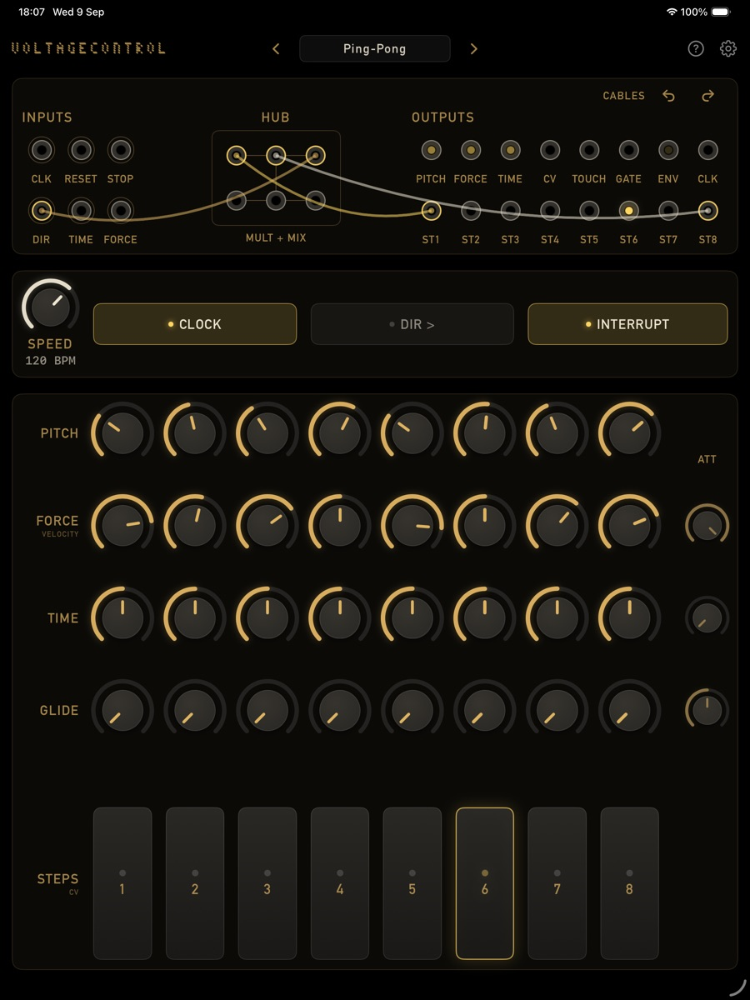
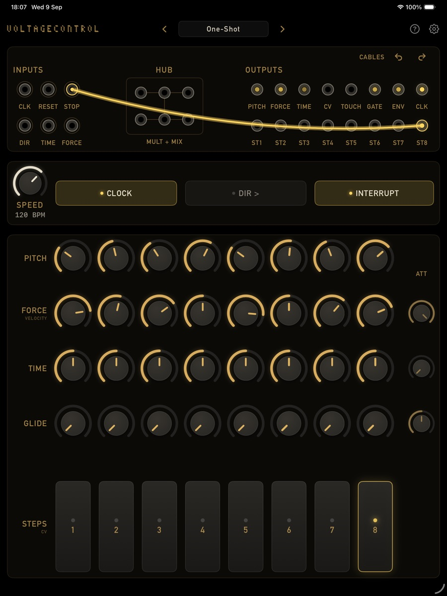
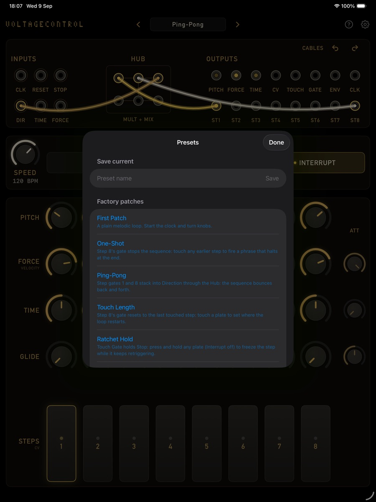

Coming to the App Store
VoltageControl
A Eurorack-style touch sequencer for iPad, standalone and in your DAW. Eight steps, a patch bay, and no modes: wire the sequencer's own gates back into its inputs and it becomes a different instrument. It makes no sound of its own; it sends MIDI. Free.



Patch a cable, watch the lights →
What it does
It thinks in voltages
Every output is a control voltage and every input listens for one. The way you patch them together is the way you program it. There are no modes, no menus of behaviours: the panel is the whole instrument.
The sequencer programs itself
Drag step 8's gate into Stop and the sequence halts at the end of a phrase. Into Reset, and touching a plate sets where the loop restarts. Touch Gate into Clock, and every tap advances one step. The Hub stacks gates and mults signals, six ports on one node.
Pitch, force, time, glide
Force decides velocity, rests, and ties. Time stretches or squeezes each step, so rhythms sit anywhere on or off the grid. Glide slides the pitch into a step: portamento with a knob per step.
Played by touch
The step plates are position sensitive: touch low for a low value, high for a high one, and each plate remembers where you left it. That is a fifth lane, CV, that you draw with your fingers. Tapping a plate jumps the sequence there.
Everything goes out as MIDI
Notes with velocity, unquantized pitch that rides the bend (or a chromatic grid), MIDI clock in and out with Start and Stop, and the step gates as notes on their own channel, so eight steps can drive eight drums. A virtual source for other apps, plus direct sends to hardware.
In your DAW
Loads in hosts such as AUM and Loopy Pro, follows the host tempo and transport, and saves with your session. In a host the Speed knob becomes a clock ratio: divide the host tempo by 2, 3 or 4, or multiply it.
In short
Patch a cable, watch the lights, listen to what changed
Presets live in the title bar, and the factory patches cover the classic moves: one-shot phrases, ping-pong, touch-controlled loop length, ratchet hold, manual clocking. Your own save as files you can share, and every patching move can be undone. VoltageControl is free, collects no data, and nothing leaves your iPad.
Updates
Get notified
VoltageControl is in App Store review. Drop a line to hear when it lands, or with questions and feedback: always welcome. See also the privacy policy.